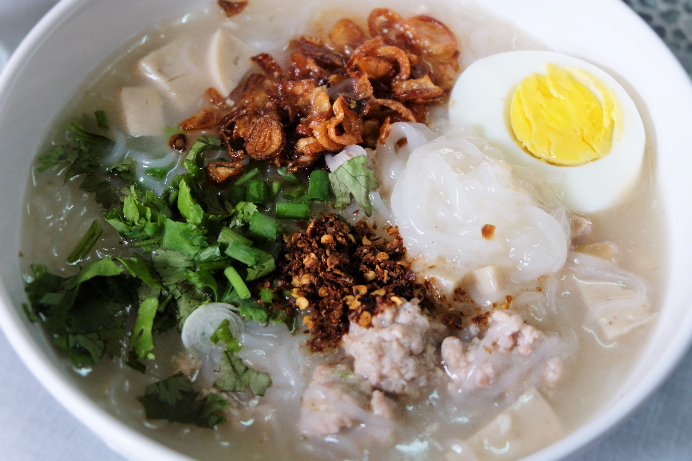

ก๋วยจั๊บญวน

ก๋วยจั๊บญวน หรือ ข้าวเปียกเส้น จะมีลักษณะสีขาวยาวๆ นุ่มๆ เส้นมี 2 แบบ คือ แบบแห้ง และแบบเส้นสด ถ้าแบบเส้นแห้งจะมีขายตามห้างร้านหรือตลาดทั่วไป สามารถเก็บไว้ได้นาน เวลาจะนำมาทำก็ต้องนำเส้นไปแช่น้ำให้นิ่มก่อนถึงจะนำมาปรุงได้ ส่วนแบบเส้นสดนั้นจะนำมาต้มได้เลยเก็บแช่ตู้เย็นได้
ส่วนผสม
• เส้นข้าวเปียก (ก๋วยจั๊บญวน) (ใช้เส้นสดหรือเส้นแห้งก็ได้)
• กระดูกซี่โครงหมู
• เกลือ
• หมูบด (ใส่หรือไม่ก็ได้ เพราะมีความหวานของน้ำซุปกระดูกหมูอยู่แล้ว)
• หมูยอ (หั่นเป็นชิ้นๆ หรือเป็นเส้นยาวๆ แล้วแต่ชอบ)
• ต้นหอม
• ผักชี
• หอมเจียว
• กระเทียม
• พริกไทยป่น
• น้ำปลา หรือซีอิ๊วขาว
• น้ำตาล
• พริกดองน้ำส้ม
• พริกป่นผัดน้ำมัน
วิธีทำ
• ล้างกระดูกซี่โครงหมู สับเป็นชิ้นพอคำใส่หม้อ นำหม้อใส่น้ำ เกลือ รากผักชี พริกไทย กระเทียม แช่ไว้สัก 10 นาที แล้วยกขึ้นตั้งไฟ พอเดือดช้อนฟองทิ้ง เคี่ยวไปจนกว่ากระดูกหมูเปื่อย จึงตักกระดูกหมูออก แล้วกรองเอาน้ำซุปในหม้ออีกใบ จากนั้นยกไปตั้งไฟให้เดือดรุมๆ
• ล้างเส้นก๋วยจั๊บ สัก 2 ครั้ง แล้วแช่น้ำทิ้งไว้สัก 10 นาที หรือจนเส้นนิ่ม (กรณีใช้เส้นแห้ง แต่ถ้าใช้เส้นสดก็แค่ล้างเส้นกับน้ำธรรมดาๆ พักไว้) แล้วสงขึ้นให้สะเด็ดน้ำ จากนั้นให้เอาเส้นที่เตรียมไว้ใส่ลงในหม้อน้ำซุป หมั่นคนอย่าให้เส้นติดก้นหม้อ เมื่อต้มเส้นสุกได้ที่แล้วจะมีลักษณะน้ำข้น เส้นพองนิ่ม ถ้าหากน้ำแห้งเกินไปให้เติมน้ำได้อีก
• หมูสับปั้นเป็นก้อนๆ หรือปั้นเป็นแผ่นบางๆ ต้มให้สุก
• ตักเส้นก๋วยจั๊บร้อนๆ ใส่ชาม แต่งหน้าด้วยหมูสับ หมูยอ โรยหอมเจียว ต้นหอม ผักชี พริกไทยป่น แล้วกินกับพริกน้ำส้ม พริกผัด น้ำปลา น้ำตาลทราย กินเป็นอาหารมื้อเช้า มื้อกลางวัน หรือจะไปถึงมื้อเย็นก็ยังได้
ขอขอบคุณรูปภาพและข้อมูลจาก : โทคโนโลยีชาวบ้าน (คลิกที่นี่)